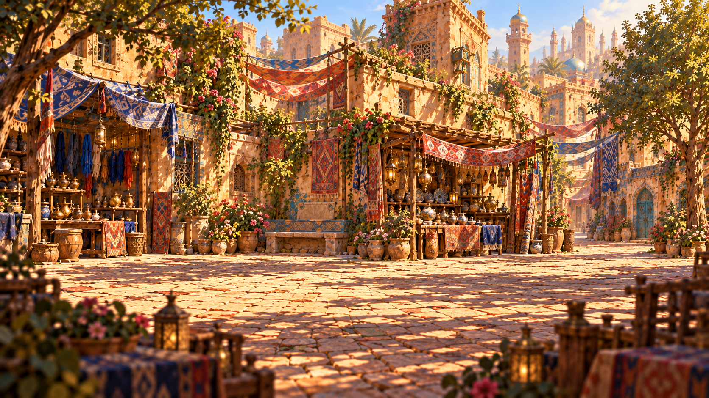
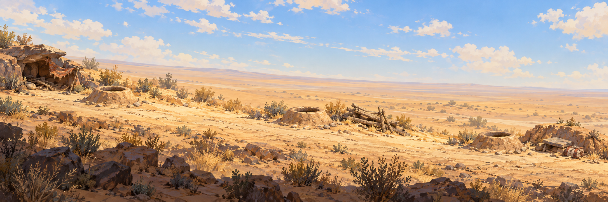

第一关 · 纹脉
织梦巷
走进老织坊，辨纹、扎线、染绸，找回一段古老的记忆。
旅程起点一座城，两段相连的故事
循着巷中的纹样，走向地下的水脉。
用双手，接续这座城的记忆。

第一关 · 纹脉
走进老织坊，辨纹、扎线、染绸，找回一段古老的记忆。
旅程起点
第二关 · 水脉
制作绳梯与陶灯，深入暗渠清淤、修补，让水流重新回到小镇。
承接织梦巷的故事进度保存在当前浏览器 · 再次进入坎儿井会从头开始 · 两关沿用同一位主角
浏览器暂时无法写入存档。当前窗口仍会保留进度，请暂时不要关闭或刷新页面。
正在进入关卡……